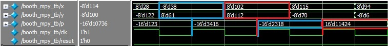
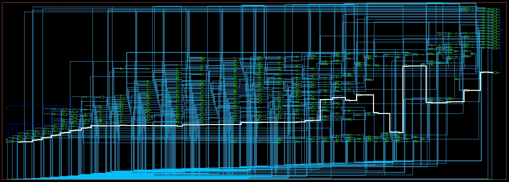
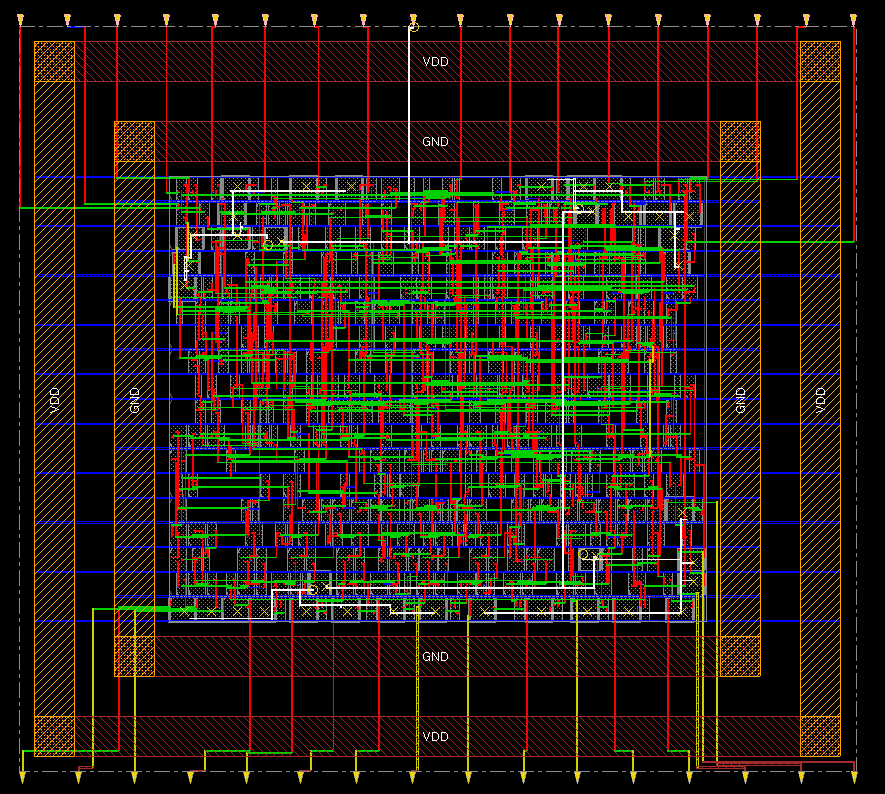
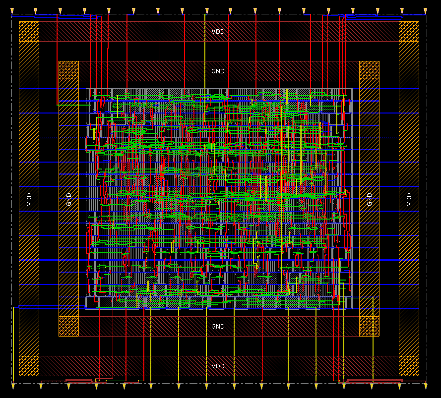

The goal of this project was to design a parameter-based, 2-input, 8-bit multiplier integrated circuit using SystemVerilog primitives and assignments and to create a gate-level netlist and layout with Synopsys Design Vision and Cadence Innovus. The multiplier is structured as a signed, modified booth-encoded multiplier with two 8-bit inputs. Signed values are handled with sign extension of the partial products generated by the booth algorithms.
The modified booth-encoding considers the multiplier in blocks of three bits and generates (N+1)/2 partial products according to the following scheme for the inputs X and Y:
| [X2i+1, X2i, X2i-1] | Partial Product |
| [0, 0, 0] | 0 |
| [0, 0, 1] | Y |
| [0, 1, 0] | Y |
| [0, 1, 1] | 2Y |
| [1, 0, 0] | -2Y |
| [1, 0, 1] | -Y |
| [1, 1, 0] | -Y |
| [1, 1, 1] | 0 |
These partial products can then be sign extended and added together. This provides a reduction in necessary additions from N to (N+1)/2 at the minimal expense of the booth logic.
The partial products are added together with an array of (N/2 x 2N)-bit Carry Save Adders (CSA). Using CSAs is advantageous because it allows the easy addition of three or more N-bit values. This is accomplished by treating the carry-in as an additional input to the full adder. The carry-out and the sum at the end of the CSA array are added together to produce the final value. In this case, we have 4 partial products which can be easily added together with a CSA array which are added together by two rows of 16-bit CSAs.
The output of the CSA array is two (2*N)-bit numbers, carry-out and sum; to add these together, a 16-bit carry lookahead adder is used. The group propagate-generate logic provides a significant advantage over a ripple-carry adder which must wait for the carry-propagation of each full adder in order to calculate the sum. The adder logic was also modified to use NAND and NOT gates in order to reduce the amount of transistors necessary.
Registered inputs and outputs, as well as a reset, were added. The code was then tested with a testbench producing the result below:
The testbench shows that the multiplier produces the correct output one clock cycle after the inputs are registered.
The SystemVerilog design was converted into a netlist using Synopsys Design Vision using FreePDK45 standard cells. The critical path and slack of the system can be examined using the Timing Analysis Driver tool. The results of the tool show that the critical path is from input X, register 0, to output product, register 15; this path has a slack of 8.2ns. The critical path is shown on the unpacked gate-level schematic below:
Using the netlist from Synopsys Design Vision, a floorplan was arranged in Cadence Innovus with 60% core utilization and inputs arranged along the top and bottom of the chip. Power rings and rails were added and the core was populated and routed with the standard cells from the FreePDK45 library. At this point, the worst slack time reported by Innovus was 7.627ns for operation at 100MHz. The clock tree was added and the routing was optimized, resulting in the layout shown below, with the clock tree highlighted in white:
Filler cells were added and the routing was modified to accommodate the new cells. Finally, in place optimization was performed, resulting in a slack of 3.759ns. This means that the multiplier can run at a rate of fmax = 1/(T-tslack) = 1/(10ns - 3.759ns) = 160.2MHz. The Final Post-Route Post-IPO Layout is shown below:
The final layout was confirmed by simulating the Verilog netlist generated by Innovus. Running the verifyConnection and verifyGeometry functions confirmed that the place and route produced performed correctly.
The final design had the following characteristics:
| Maximum frequency | 160.2 MHz |
| VDD | 1.1V |
| Power Consumption | 0.32983mW |
| Energy per operation | 2.0589pW |
| Core area | 900um2 |
| Cell area | 1315.45um2 |
Further modifications were made to the SystemVerilog design. One such modification is the parametrization of the SystemVerilog modules to allow the design to multiply two N-bit inputs. The parameters used allow the top level module to assign an input width parameter for all submodules. Additionally, modifications were made to the adder array to reduce the number of adders on the LSBs of the partial products; this change is possible because all but one of the LSBs of the partial products per column are zero, so the LSBs of the partial products can be directly assigned to the output registers. These changes can be seen in the N-bit multiplier SystemVerilog files. Netlist and layout were not performed for the modified design because access was lost to the Synopsys and Cadence software.